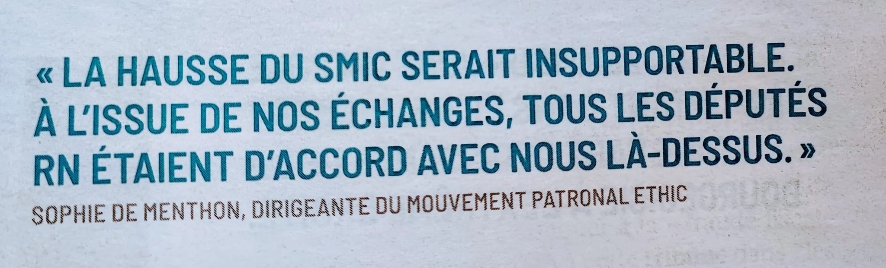

Prise de position fédérale
Le PCF 79 dénonce les positions du RN sur le SMIC
Date indiquée par Facebook · 8 juin 2024
Repères éditoriaux
Dans ce message de campagne, nous avons relayé une citation attribuée à Sophie de Menthon sur l’opposition à la hausse du SMIC. La citation figure dans le visuel conservé.
Texte conservé avec la publication
Imposture sociale du #RN (suite)

Sources
Archive rouge · export Facebook · AR-0002-FB-01363
À lire aussi · Européennes 2024. Le meeting de la Gauche unie à Amiens · Le lien d’origine